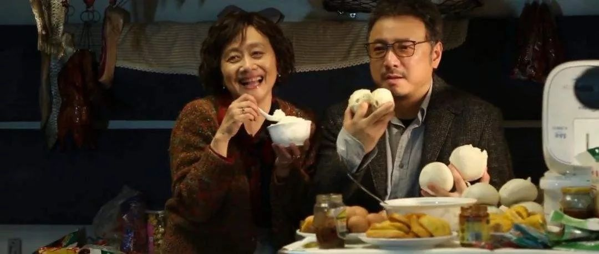
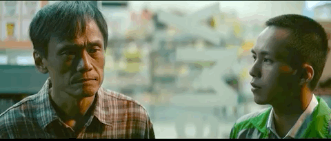

大年三十，父母送我们离开了湖北老家丨人间
原文链接 备份链接 我们曾经有些隔阂，原本抗拒的、刻意回避的老家，逐渐变成了期待。 在短暂的相聚中，我们又哭又笑，心靠得更近了。 配图 | 《亲爱的孩子》剧照 前 言 这是一场战争，在新年的伊始，爆发在每一个普通的、平凡的中国人身边。 这 …

点击上方物质生活参考加星标！
物质生活参考
_

作者：赵小薇
来源：物质生活参考（ID：wzshck）
“暂时居家办公”的钉钉提示，让刘芸与母亲开启了新一轮相处。在这之前，母女俩已经每日四目相对超过20天。
“每天都在‘要疯了’和‘坚持住’的心情间游走。”刘芸说。
“史上最长法定假期”、高校开学时间推迟、暂行居家办公政策……对于许多年轻人而言，疫情笼罩下的一系列操作，让这个创下了与父母朝夕相处最长纪录的冬春之交，注定不太平常。
01.
朝夕相处后的第十天，刘芸与母亲爆发了第一次争吵。
在一通不知打给老家哪位亲朋的微信电话里，母亲细数了女儿的种种不是，除了“不爱打扫卫生、不找男朋友、不会做饭”等常规抱怨外，还增加了一条“来了这么久了哪儿也没带我去！”
母亲来北京是在春节前，按原计划，母女俩将在假期去往日本京都。不料疫情席卷而来，刘芸与母亲退掉了票，留在北京。
来自东北的母亲获取外界信息的手段主要是电视和微信，心中的权威信源只有新闻联播。因而很长一段时间，她都觉得女儿危言耸听。
与许多同龄人一样，90后的刘芸为了让母亲少出门、戴口罩，做了大量包括劝说、恐吓在内的劝导工作，“非典后遗症的文章啊，中老年专用截图啊，都发了，但她就是不当回事。”刘芸抱怨说，“我想让她戴口罩比她想让我穿秋裤还难！”
最终让母亲感到“情况严重了”，还是联播中每日上升的确诊数字。两个人的活动范围就此局限于方圆300米之内，然而即便只是去楼下超市，母女俩也不免起冲突。老字号的元宵30块钱20颗，之前强调“北方人还是要吃元宵”的母亲坚决不肯买，认为这是“坐地起价”。
与之相比，80后的胡青与父亲的争执原因，则显得更为“严肃”一些。“他看完美国流感新闻之后就放松了警惕，说，中国这新冠也没那么吓人吧？还没它流感死的人多！”重庆人的乐观天性瞬间得到释放，“甚至觉得不戴口罩就可以出门了！”
胡青一时间火冒三丈。父女俩从防疫常识一路辩论到国际局势，“他赢了我也没输”，胡青说，自己作出了将电视频道选择权交给父亲的让步，交换条件是，对方减少出门次数，以及出门必戴口罩。至于国际争端、政治走向，二人表示“暂时求同存异好了”。
事后胡青反思，平日自己与父母关系不错，争吵主要源于“相处时间超过警戒线”。大学毕业以来，这是她与父母相处时间最长的假期。
“时间就是矛盾的放大镜，特别考验人的意志品质。”她说。“起早了，问你怎么不多睡会儿，起晚了，说你只知道睡觉。”胡青说，网上关于与父母相处的吐槽绝对不是段子，“那是我们的血泪教训！”
两天前，胡青也接到公司了“居家办公、暂不通勤”的通知。虽然可以回到自己的房子，但她还是选择继续与父母住在一起。
一个女孩追在殡仪馆车后大哭叫妈妈的视频看到她心碎，“生死面前，一切都是小事。”胡青说，重庆目前情况也不明朗，还是一家人捆绑生活，心里比较安定。
刘芸则与母亲度过了一个吃汤圆的元宵节。她算了一下，这是自己毕业后第一次在元宵节吃到家常饭菜，这样一想，就觉得“汤圆也还不错”。
02.
大年初八，93年出生的王鹏在观看看电影《囧妈》时，几度热泪盈眶。电影里，原本要去美国跟前妻争财产的徐伊万，阴差阳错地跟妈妈坐上了前往莫斯科的火车。六天六夜的行程中，男主角与母亲共处一个车厢。

接受媒体采访时，导演兼编剧徐峥把这个故事描述为“灾难”。“如果你是一个成年男人，六天六夜跟自己的妈妈两个人在一个火车车厢里面，基本上我觉得是个灾难。”他说。
“我这都快两个六天六夜了，”王鹏痛苦地计算着日期。年前就回到黑龙江老家的他，已经创下成年后与父母日夜相处的最高纪录。火车上的所有故事情节，几乎都在这个漫长的春节里，与他和母亲的相处形成完美映射。
《囧妈》中，儿子吃什么水果、吃多少红烧肉、什么时候喝水排尿、怎样要孩子，全部在母亲周密计划之中；现实生活中，王鹏应吃是橘子还是苹果，要吃酸菜还是白肉，到底一天还是隔天洗头，也必须在母亲指挥下进行。

“洗头弄湿了袖子，就被教育了一早上。”王鹏十分沮丧。儿子洗头，母亲在旁边看着，对所有动作细节进行规范，这是他从小就熟悉的操作流程。在他回忆中，母亲的严格管控一以贯之，读什么书，上什么学校，吃什么菜，喝什么牛奶，交什么朋友，全部由母亲决定。
毕业后在北京工作这几年，王鹏每年只在春节回老家。相处时间短，控制和改造很难形成规模，杀伤力相对有限。这一次，母亲又有了施展拳脚的机会，最近几天，甚至已经对他袜子的颜色提出了要求。
困在山东淄博小村里的张晓，面临的是更为惨烈的“囧”境。回到村里十几天，父亲的骂声几乎没有断过。不擦桌子会挨骂，不吃早饭会挨骂，熬夜写稿子也会挨骂。“他嫌地板脏、嫌桌子脏，说家里还不如一个猪圈。”张晓满心委屈。
与王鹏一样，绝对权威和“打击式教育”，贯穿了张晓整个成长历程。从小被否认、被责骂的阴影至今挥之不去，张晓只好去求助心理医生，“去年做心理咨询就花了一万块，我每个月生活费才两千。”
但王鹏的应对方式主要是“躲”。除了洗漱、吃饭等生活必须环节，他的活动地点基本局限于卧室。王鹏前所未有地希望早日复工，否则“心理防线快被击穿了”；而他最大胆的打算，是将《囧妈》推荐给母亲。
但他对此又存有犹疑：“我怕她领会到的点不是‘不要控制太多’，而是‘你看人家事业多成功’或者‘你至少得先把婚结了’。”王鹏说。
03.
也有些人与父母的关系，在非常时期实现了某种逆转。
杨菲的爸妈在湖北孝感，情况恶化之前，她在家人催促下回到北京，开始自我隔离。虽然家人情况稳定、身体健康，但杨菲依旧时刻处于焦虑之中。
“每天差不多要打十几个语音电话，”杨菲说，电话的内容大同小异，问问身体有没有状况，冰箱里的菜够不够。每日上升的确诊数字让她紧张万分，几次下决心“再也不看了”，但还是忍不住要一刷再刷。
因为家里已经没有口罩存货，快递又无法送达，杨菲要求父母不许出门。怕爸妈不听话，她甚至开启了微信运动监视模式。“步数稍微多一点，我都要神经病一样过去盘问。”杨菲说。
这几乎是她与父母关系最为亲密的时刻。春节之前，因为不断被催，杨菲几次想把母亲的微信拉黑，甚至一度赌气，准备与老公出国过节。现在她部分理解了母亲的焦虑，因为自己现在“也很烦人”。
前两天，父亲告知杨菲，家里青菜吃光了，准备去门口的菜场看看还有没有人卖菜。杨菲吓坏了，一边晓之以理动之以情劝说他先靠储存的干货撑下去，一边紧急联络母亲，叮嘱她严防死守，绝对不允许父亲迈出门一步。前后不过半小时，杨菲发现自己嗓子急得完全哑了。
同样，在这个春节来临之前，大龄单身的两姐妹李欣和李璐，已经被父母安排的相亲搞得不厌其烦。姐妹俩的策略是将父母接到北京，然后以全家度假的方式转移催婚压力。
虽然哪儿也没去成，但在长达两周的共处中，姐妹俩渐渐摸索出了非常时期的非常策略。父亲爱打牌，但一输血压就高。姐妹俩顶着母亲的训斥，买回扑克，承担起“常输牌友”的角色。一周过去，父亲的血压居然降下来了。
至于相亲，“不能出门”的安全准则暂时解决了问题。母亲试图以“出了问题至少多个人依靠”来教育两姐妹，并将“非典时期北京离婚率下降”的旧闻大声朗读，但李欣很快找到“非典之后离婚率飙升”的报道予以回应。
“特殊时期特殊状况下的形成的特殊关系，基本没有规律可循。现在也一样。”李欣说。但她还是在相处中发现了母亲的智慧。公司群里，老板发了一大堆暗示大家开工的话，听李欣读完这套高级又迂回的话术，母亲一边包饺子一边说：“只有你是真心为别人好，才能说出好听的话。”
“我做了这么多年文案，觉得我妈这句超过市面50%的金句。”李欣说。另一金句是，被问到家里最难是哪段时间，母亲在开启了一个多小时的完整回顾后，说：“咱家没有太难的时候，至少都没有武汉人民难。”
尾
王鹏最终没有把《囧妈》推荐给母亲。一是在他看来，困在车厢与困在家中一样，都是极端环境，因而即便为此作出什么改变，也不过是应激的、暂时的；二是漫长的假期最终告一段落，在一切变得更加难以控制之前，他坐上了回京的列车。
路上他刷了另一部关于亲子关系的电影，《阳光普照》。平静的节奏下，父与子之间的矛盾与羁绊如暗流涌动。与《囧妈》一样，两代人最终在某种程度上达成了和解，只是代价惨重。

这让他感到“躲避”可能并非完美解决方式。虽然尚未想到与母亲沟通的有效方法，但王鹏记住了电影中在驾校工作的父亲反复提及的八个字：
把握时间，掌握方向。
“这八个字，也许对很多事都有指导意义。”王鹏说。

应被采访者要求，
文中刘芸、王鹏、张晓、杨菲、李欣、李璐为化名。
头图与内文图片皆为视频截图

△长按二维码，添加物质生活君微信，
回复“粉丝”，进入物质生活粉丝群，
获取独家优质生活参考。

\= 推荐阅读=

这本书里，藏着非典的秘密，也藏着新冠肺炎的秘密
当口罩成为硬通货

胆战心惊，我回到了北京
- END-

文章已于修改
原文链接 备份链接 我们曾经有些隔阂，原本抗拒的、刻意回避的老家，逐渐变成了期待。 在短暂的相聚中，我们又哭又笑，心靠得更近了。 配图 | 《亲爱的孩子》剧照 前 言 这是一场战争，在新年的伊始，爆发在每一个普通的、平凡的中国人身边。 这 …
原文链接 备份链接 采访、撰文 | 赵力 封 | 母亲反复清洗的棉质口罩 投稿邮箱 | gayspot_edit@163.com 1月31日，早上五点多，武力就醒了。他能听见隔壁母亲起床窸窸窣窣的声音。 他知道七点一过，父亲会是这个家里第 …
原文链接 备份链接 作家成向阳的妻子是抗疫一线的医护人员，他记录下这些天来与妻子“相隔两地”的日常，虽是分别生活着，却又像始终在一起，一起坚守着，等春天到来。 1月29日 | 晴 上午8点，她套好蓝色无纺布隔离衣、戴好桶帽和护目镜，捂紧三 …
原文链接 备份链接 “ 母亲这些天常说，“我是真的很想家了，离开武汉你不会怨我吧。” —全民故事计划的第437个故事 — 一 母亲今年六十岁，来武汉时正值夏天，经过半年的适应，已基本习惯南方的生活。 城里的旧闻新知很多，最初的那段时间里， …
原文链接 备份链接 邵阳日记 _ 小新 _ _ _ _ _ _ 我的家在湖南省邵阳市邵阳县塘田市镇，1月10日，我从广州的学校回到老家。本来准备好过一个安逸的寒假，结果突如其来的疫情让周围的一切都不再平静。 _ _ _ _ ●口罩● _ …